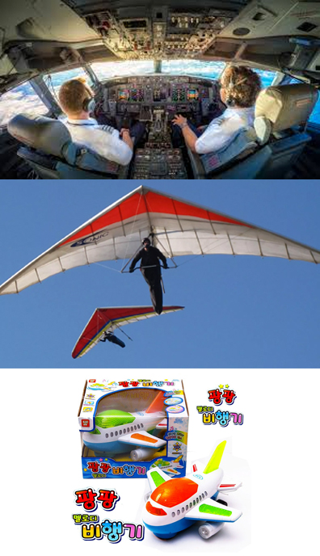

영상디자인학과와 소프트웨어학과를 동시에 다니며 가장 많이 들었던 질문은 디자이너가 코딩을 왜 해요? 였습니다. 글쎄요, 왜 하는 걸까요? 사실 저도 잘 모르겠습니다. 저는 개인적으로 디자이너가 꼭 코딩을 해야만 할 필요는 없는 것 같다고 생각합니다. 적당히 기초를 아는 건 어느정도 도움이 되겠지만 더 깊게 파고들어야 할 필요는 없는 것 같아요. 근데 그럼 너는 왜 하냐? 고 물으실지 모르겠습니다.
혹시 게임 좋아하시나요? 저는 굉장히 좋아합니다. 근데 누가 저한테 게임 왜 하냐고 묻는다면 딱히 할 말이 없을 것 같습니다. 그냥 하는거죠. 코딩도 마찬가지입니다. 그냥 재미있어서 합니다! 굉장히 재수없는 대답인가요? 근데 저라고 코딩이 다 재미있는 건 아닙니다. 자료구조 배울 때는 솔직히 좀 재미 없었습니다. 시스템 소프트웨어도 그렇게 막 재미있진 않았습니다. 제가 좋아하는 건 눈으로 보이는 컴퓨터 그래픽스 분야입니다. 그렇다고 최신 컴퓨터 그래픽스 기술이라고 무조건 다 좋아하는 건 또 아닙니다. 새로운 자료구조를 사용해서 렌더링 성능을 10% 향상시켰다? 솔직히 잘 모르겠습니다. 제게 흥미로운 분야는 어떻게 컴퓨터를 사용해서 아름다운 이미지를 만들어내느냐? 입니다.
이렇게 이야기하니까 좀 디자이너 같은가요? 그렇습니다. 저는 공학자가 아닌 디자이너입니다. 다만 컴퓨터를 도구로 사용할 뿐입니다. 사실 대부분의 디자이너들이 컴퓨터를 써서 디자인하잖아요? 그것과 비슷하다고 생각하시면 됩니다. 그냥 조금 특이할 뿐이지요. 사실 요새는 별로 특이하지도 않은 것 같아요. 너무나 많은 분들이 코딩을 사용한 작업을 하고 계시니까요!
코딩으로 뭘 할 수 있는데요?
원 그리기부터 시작해서 엄청나게 복잡한 이미지를 만들어내기까지 다양한 작업들을 할 수 있습니다. 사실 이 페이지에도 자바스크립트가 쓰였구요. 뭘 만들 수 있느냐는 질문은 마치 레고로 뭘 만들 수 있는데요? 라고 물어보는 것과 비슷하다고 생각합니다.
레고에도 설계도는 있지만 꼭 설계도대로 만들어야만 하는 건 아니죠. 뭘 만드는지는 각자의 생각에 달려 있고 코딩은 그냥 도구일 뿐입니다! 생각해보면 여러분이 쓰는 일러스트레이터나 포토샵 맥스 마야 애프터 이펙트 등의 도구들은 전부 코딩으로 만들어져 있잖아요?
초코딩은 뭔가요?
이제야 소개를 드리는군요. 초코딩은 ‘초보자의 코딩 동아리’의 약자로 제가 국민대학교에서 코딩에 관심이 있는 디자이너(물론 디자이너가 아니어도 괜찮습니다.)들을 위해 운영하고 있는 코딩 스터디 동아리입니다. 주로 프로세싱이나 유니티를 공부하고 있구요. 학과나 학교, 나이 학번 기간 등에 관계 없이 인원을 받고 있어요. 회원수는 백 명이 넘지만 유령회원이 그 중 3분의 2정도 되기 때문에 부담 가지지 않고 막 들어오셔도 됩니다! 코딩이 내 길이 아니라는 사실을 알게 된 것도 나름대로의 수확이라고 할 수 있으니까요.
초코딩은 규칙이 존재하지 않는 자유로운 스터디 모임입니다. 초코딩 멤버들은 이 동아리에서 자신의 아이디어를 키우고, 시도해보고, 한계에 도전해보고, 대체물을 실험해보고, 다른 사람에게서 배우며, 경험으로부터 배우게 됩니다. 초코딩 멤버들은 이런 과정에서 동료를 찾고, 서로 자랑하고, 실패에 두려워하지 않는 용기를 배웁니다. 배우려는 만큼 배워갈 수 있을 거예요. 이 과정에서 저는 뭘 얻냐구요? 저는 저의 실력을 자랑할 수 있는 기회를 얻습니다! 초코딩에서 여러분들은 배우고 저는 자존감을 회복하는 1석 2조의 WIN-WIN 체계를 경험하실 수 있습니다.
왜 프로세싱인가요?
초코딩에서는 주로 시각적인 결과물이 쉽게 나오는 프로세싱과 유니티를 이용해서 쓸모가 불분명하고 재미있는 것들을 만들어내고 있습니다. 시각적인 피드백은 비단 디자이너 뿐만 아니라 코딩을 처음 접하는 사람에게 아주 중요하지요. 결과물이 안 보이면 재미도 없고 이해하기도 어려우니까요!

위에서부터 C언어, 프로세싱, 스크래치의 느낌.
처음 코딩을 배우는 사람들이 주로 접하는 파이썬은 물론 아주아주 좋은 도구이지만, 시각적인 피드백을 얼마나 쉽게 받을 수 있는가 하는 측면에서 본다면 프로세싱이 더 우위에 있다고 생각합니다. 그렇다고 스크래치를 하기엔 이건 요새 초등학생도 한다는데 대학생이나 돼서 뭔가 자존심 상하는 느낌을 받는 것 같구요. 그래서 우리는 프로세싱과 유니티를 이용합니다!